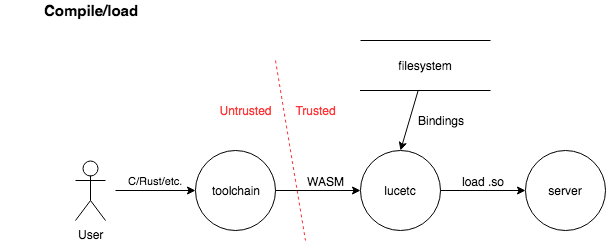
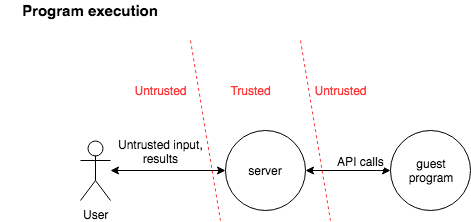

Lucet 
A Bytecode Alliance project
Lucet is a native WebAssembly compiler and runtime. It is designed to safely execute untrusted WebAssembly programs inside your application.
Check out our announcement post on the Fastly blog.
Lucet uses, and is developed in collaboration with, the Bytecode Alliance's Cranelift code generator. It powers Fastly's Terrarium platform.

Lucet's documentation is available at https://bytecodealliance.github.io/lucet (sources).
Getting started
To learn how to set up the toolchain, and then compile and run your first WebAssembly application using Lucet, see Getting started.
Development environment
Lucet is developed and tested on x86-64 Linux, with experimental support for macOS. For compilation instructions, see Compiling.
Supported languages and platforms
Lucet supports running WebAssembly programs written in C and C++ (via clang), Rust, and
AssemblyScript. It does not yet support the entire WebAssembly spec, but full support is
planned.
Lucet's runtime currently supports x86-64 based Linux systems, with experimental support for macOS.
Security
The Lucet project aims to provide support for secure execution of untrusted code. Security is achieved through a combination of Lucet-supplied security controls and user-supplied security controls. See Security for more information on the Lucet security model.
Reporting Security Issues
The Lucet project team welcomes security reports and is committed to providing prompt attention to security issues. Security issues should be reported privately via Fastly’s security issue reporting process. Remediation of security vulnerabilities is prioritized. The project teams endeavors to coordinate remediation with third-party stakeholders, and is committed to transparency in the disclosure process.
Using Lucet
To get started using Lucet, you will need to either set up the provided Docker-based development environment, or compile Lucet from scratch.
Once the Lucet command-line tools are available, you can run a Lucet "Hello World"
application, or use the lucet-runtime
API to embed a Lucet program in your Rust application.
Getting started
The easiest way to get started with the Lucet toolchain is by using the provided Docker-based development environment.
This repository includes a Dockerfile to build a complete environment for
compiling and running WebAssembly code with Lucet, but you shouldn't have to use
Docker commands directly. A set of shell scripts with the devenv_ prefix are
used to manage the container.
Setting up the environment
-
The Lucet repository uses Git submodules. Make sure they are checked out by running
git submodule update --init --recursive. -
Install and run the
dockerservice. We do not supportpodmanat this time. On macOS, Docker for Mac is an option. -
Once Docker is running, in a terminal at the root of the cloned repository, run:
source devenv_setenv.sh. (This command requires the current shell to bezsh,kshorbash). After a couple minutes, the Docker image is built and a new container is run. -
Check that new commands are now available:
lucetc --help
You're now all set! You can now compile and run a "Hello World" using Lucet.
Top-level scripts for the Docker environment
./devenv_build_container.shrebuilds the container image. This is never required unless you edit theDockerfile../devenv_run.sh [<command>] [<arg>...]runs a command in the container. If a command is not provided, an interactive shell is spawned. In this container, Lucet tools are installed in/opt/lucetby default. The commandsource /opt/lucet/bin/devenv_setenv.shcan be used to initialize the environment../devenv_start.shand./devenv_stop.shstart and stop the container.
Compiling Lucet from scratch
Specific instructions are available for some flavors of Linux and for macOS (experimental).
If you are using another platform, or if the provided instructions are not working, it may be
helpful to try adapting the setup code in the Dockerfile that defines the Lucet continuous
integration environment. While the image is defined in terms of Ubuntu, many of the packages are
available through other package managers and operating systems.
FROM ubuntu:xenial
RUN apt-get update \
&& apt-get install -y --no-install-recommends \
build-essential \
curl \
git \
libbsd-dev \
doxygen \
python-sphinx \
cmake \
ninja-build \
ca-certificates \
software-properties-common \
libssl-dev \
pkg-config \
csmith \
libcsmith-dev \
creduce \
gcc-multilib \
clang-6.0 \
&& rm -rf /var/lib/apt/lists/*
RUN update-alternatives --install /usr/bin/clang clang /usr/bin/clang-6.0 100
# Setting a consistent LD_LIBRARY_PATH across the entire environment prevents unnecessary Cargo
# rebuilds.
ENV LD_LIBRARY_PATH=/usr/local/lib
# Install our supported version of Rust, rustfmt, and the wasm32-wasi cross-compilation target
RUN curl https://sh.rustup.rs -sSf | sh -s -- --default-toolchain 1.40.0 -y
ENV PATH=/root/.cargo/bin:$PATH
RUN rustup component add rustfmt
RUN rustup target add wasm32-wasi
# Optional additional Rust programs
RUN cargo install --debug cargo-audit cargo-watch rsign2 cargo-deb mdbook
RUN curl -sS -L -O https://github.com/CraneStation/wasi-sdk/releases/download/wasi-sdk-8/wasi-sdk_8.0_amd64.deb \
&& dpkg -i wasi-sdk_8.0_amd64.deb && rm -f wasi-sdk_8.0_amd64.deb
ENV WASI_SDK=/opt/wasi-sdk
# optional install of wasm-opt and wasm-reduce for fuzzing and benchmarking
ENV BINARYEN_DIR=/opt/binaryen
ENV BINARYEN_VERSION=86
RUN curl -sS -L "https://github.com/WebAssembly/binaryen/archive/version_${BINARYEN_VERSION}.tar.gz" | tar xzf - && \
mkdir -p binaryen-build && ( cd binaryen-build && cmake "../binaryen-version_${BINARYEN_VERSION}" && \
make wasm-opt wasm-reduce ) && \
install -d -v "${BINARYEN_DIR}/bin" && \
for tool in wasm-opt wasm-reduce; do install -v "binaryen-build/bin/${tool}" "${BINARYEN_DIR}/bin/"; done && \
rm -fr binaryen-build binaryen-version_${BINARYEN_VERSION}
ENV PATH=$BINARYEN_DIR:$PATH
Compiling on Linux
We successfully compiled Lucet on Arch Linux, Fedora, Gentoo and Ubuntu. Only x86_64 CPUs are supported at this time.
Installation on Ubuntu, with a sidecar installation of LLVM/clang
The following instructions only work on Ubuntu. They install a recent version of LLVM and clang
(in /opt/wasi-sdk), so that WebAssembly code can be compiled on Ubuntu versions older than 19.04.
First, the curl and cmake package must be installed:
apt install curl ca-certificates
You will need to install wasi-sdk as well. Note that you may need to run dpkg with elevated
privileges to install the package.
curl -sS -L -O https://github.com/CraneStation/wasi-sdk/releases/download/wasi-sdk-8/wasi-sdk_8.0_amd64.deb \
&& dpkg -i wasi-sdk_8.0_amd64.deb && rm -f wasi-sdk_8.0_amd64.deb
Install the latest stable version of the Rust compiler:
curl --proto '=https' --tlsv1.2 -sSf https://sh.rustup.rs | sh
source $HOME/.cargo/env
Enter your clone of the Lucet repository, and then fetch/update the submodules:
cd lucet
git submodule update --init --recursive
Finally, compile the toolchain:
make install
In order to use clang to compile WebAssembly code, you need to adjust your PATH to use tools
from /opt/wasi-sdk/bin instead of the system compiler. Or use set of commands prefixed by
wasm-wasi-, such as wasm32-wasi-clang instead of clang.
Installation on any recent Linux system, using the base compiler
Support for WebAssembly was introduced in LLVM 8, released in March 2019.
As a result, Lucet can be compiled with an existing LLVM installation, provided that it is up to date. Most distributions now include LLVM 8 or LLVM 9, so that an additional installation is not required to compile to WebAssembly .
On distributions such as Ubuntu (> 18.04) and Debian, the following command installs the prerequisites:
apt install curl ca-certificates clang lld cmake
On Arch Linux:
pacman -S curl clang lld cmake
Next, install the WebAssembly compiler builtins:
curl -sL https://github.com/CraneStation/wasi-sdk/releases/download/wasi-sdk-8/libclang_rt.builtins-wasm32-wasi-8.0.tar.gz | \
sudo tar x -zf - -C /usr/lib/llvm-*/lib/clang/*
Install the latest stable version of the Rust compiler:
curl --proto '=https' --tlsv1.2 -sSf https://sh.rustup.rs | sh
source $HOME/.cargo/env
Install the WASI sysroot:
mkdir -p /opt
curl https://github.com/CraneStation/wasi-sdk/releases/download/wasi-sdk-8/wasi-sdk-8.0-linux.tar.gz | \
sudo tar x -zv -C /opt -f - wasi-sdk-8.0/share && \
sudo ln -s /opt/wasi-sdk-*/share/wasi-sysroot /opt/wasi-sysroot
Enter your clone of the Lucet repository, and then fetch/update the submodules:
cd lucet
git submodule update --init --recursive
Set the LLVM path:
export LLVM_BIN=/usr/lib/llvm-*/bin
Finally, install the Lucet toolchain with:
make install
The standard system compiler can be used to compile to WebAssembly, simply by adding
--host=wasm32-wasi to the compilation flags.
Compiling on macOS
Install llvm, rust and cmake using Homebrew:
brew install llvm rust cmake
In order to compile applications to WebAssembly, builtins need to be installed as well:
curl -sL https://github.com/CraneStation/wasi-sdk/releases/download/wasi-sdk-8/libclang_rt.builtins-wasm32-wasi-8.0.tar.gz | \
sudo tar x -zf - -C /usr/local/opt/llvm/lib/clang/9*
Fetch, compile and install the WASI libc:
git clone --recursive https://github.com/CraneStation/wasi-libc
cd wasi-libc
sudo env PATH=/usr/local/opt/llvm/bin:$PATH \
make INSTALL_DIR=/opt/wasi-sysroot install
cd - && sudo rm -fr wasi-libc
Enter the Lucet git repository clone, and fetch/update the submodules:
cd lucet
git submodule update --init
Set relevant environment variables:
export WASI_SYSROOT=/opt/wasi-sysroot
export CLANG_ROOT="$(echo /usr/local/opt/llvm/lib/clang/9*)"
export CLANG=/usr/local/opt/llvm/bin/clang
Finally, compile and install toolchain:
env LUCET_PREFIX=/opt/lucet make install
Change LUCET_PREFIX to the directory you would like to install Lucet into. /opt/lucet is the default directory.
The Lucet executable files can be found in the target/release/ directory.
Your first Lucet application
Ensure the Lucet command-line tools are available in your shell, either by using the Docker-based development environment, or by compiling them yourself.
If you are using the Docker environment, note that container has limited visibility into the host's
filesystem—it can only see files under the lucet repository.
Create a new work directory in the lucet directory:
mkdir -p src/hello
cd src/hello
Save the following C source code as hello.c:
#include <stdio.h>
int main(void)
{
puts("Hello world");
return 0;
}
Time to compile to WebAssembly! The development environment includes a version of the Clang
toolchain that is built to generate WebAssembly by default. The related commands are accessible from
your current shell, and are prefixed by wasm32-wasi-.
For example, to create a WebAssembly module hello.wasm from hello.c:
wasm32-wasi-clang -Ofast -o hello.wasm hello.c
The next step is to use Lucet to build native x86_64 code from that WebAssembly file:
lucetc-wasi -o hello.so hello.wasm
lucetc is the WebAssembly to native code compiler. The lucetc-wasi command runs the same
compiler, but automatically configures it to target WASI.
hello.so is created and ready to be run:
lucet-wasi hello.so
Example usage of the lucet-runtime crate.
The following Rust code loads a WebAssembly module compiled using lucetc-wasi and calls its
main() function.
.cargo/config:
These flags must be set in order to have symbols from the runtime properly exported.
[build]
rustflags = ["-C", "link-args=-rdynamic"]
Cargo.toml:
[package]
name = "lucet-runtime-example"
version = "0.1.0"
edition = "2018"
[dependencies]
lucet-runtime = { path = "../../lucet-runtime" }
lucet-wasi = { path = "../../lucet-wasi" }
# or, if compiling against released crates.io versions:
# lucet-runtime = "0.5.1"
# lucet-wasi = "0.5.1"
src/main.rs:
use lucet_runtime::{DlModule, Limits, MmapRegion, Region}; use lucet_wasi::WasiCtxBuilder; fn main() { // ensure the WASI symbols are exported from the final executable lucet_wasi::export_wasi_funcs(); // load the compiled Lucet module let dl_module = DlModule::load("example.so").unwrap(); // create a new memory region with default limits on heap and stack size let region = MmapRegion::create(1, &Limits::default()).unwrap(); // instantiate the module in the memory region let mut instance = region.new_instance(dl_module).unwrap(); // prepare the WASI context, inheriting stdio handles from the host executable let wasi_ctx = WasiCtxBuilder::new().inherit_stdio().build().unwrap(); instance.insert_embed_ctx(wasi_ctx); // run the WASI main function instance.run("main", &[]).unwrap(); }
End-to-end integrity and authentication of Lucet assets
Lucet tools have the ability to verify digital signatures of their input, and produce signed output, ensuring continuous trust even if assets have to transit over unsecured networks.
lucetccan be configured to only compile source code (.wasm,.watfiles) if a signature is present, and can be verified using a pre-configured public key.- Shared libraries produced by the
lucetccompiler can themselves embed a signature, computed using the same secret key as the source code, or a different key. - The
lucet-wasiruntime can accept to run native code fromlucetconly if it embeds a valid signature for a pre-configured public key.
Secret keys can be protected by a password for interactive use, or be password-less for automation.
Minisign is the highly secure signature system used in Lucet via the minisign crate. Key pairs and signatures are fully compatible with other implementations.
Lucetc signature verification
Source files (.wasm, .wat) can be signed with minisign, rsign2, or another Minisign implementation.
The Lucet container ships with rsign2 preinstalled.
Creating a new key pair
rsign generate
Please enter a password to protect the secret key.
Password:
Password (one more time):
Deriving a key from the password in order to encrypt the secret key... done
The secret key was saved as /Users/j/.rsign/rsign.key - Keep it secret!
The public key was saved as rsign.pub - That one can be public.
Files signed using this key pair can be verified with the following command:
rsign verify <file> -P RWRJwC2NawX3xnBK6mvAAehmFWQ6Z1PLXoyIz78LYkLsklDdaeHEcAU5
Signing a WebAssembly input file
rsign sign example.wasm
Password:
Deriving a key from the password and decrypting the secret key... done
The resulting signature is stored into a file with the same name as the file having been signed, with a .minisig suffix (in the example above: example.wasm.minisig).
Configuring lucetc to verify signatures
Source files can be verified by adding the following command-line switches to lucetc.
--signature-verify
--signature-pk=<path to the public key file>
lucetc assumes that a source file and its signature are in the same directory.
Compilation will only start if the signature is valid for the given public key.
Producing signed shared objects
Shared libraries produced by the lucetc compiler can embed a signature.
Creating a key pair
This requires a secret key, that can be either created using a 3rd party minisign implementation, or by lucetc itself:
lucetc --signature-keygen \
--signature-sk <file to store the secret key into> \
--signature-pk <file to store the public key into>
By default, secret keys are protected by a password. If this is inconvenient, lucetc also supports raw, unencrypted secret keys.
In order to use raw keys, add a raw: prefix before the file name (ex: --signature-sk=raw:/opt/etc/lucet.key).
Signing shared objects produced by lucetc
In order to embed a signature in a shared object produced by lucetc or lucetc-wasi, the following command-line switches should be present:
--signature-create
--signature-sk <path to the secret key file>
If the secret key was encrypted with a password, the password will be asked interactively.
Signatures are directly stored in the .so or .dylib files.
Key pairs used for source verification and for signing compiled objects can be different, and both operations are optional.
Signature verification in the Lucet runtime
lucet-wasi can be configured to run only trusted native code, that includes a valid signature for a pre-configured key. In order to do so, the following command-line switches have to be present:
--signature-verify
--signature-pk <path to the public key file>
Lucet components
-
lucetc: the Lucet Compiler.lucet-builtins: a C library that provides optimized native versions of libc primitives.
-
lucet-runtime: the runtime for WebAssembly modules compiled throughlucetc. -
lucet-wasi: runtime support for the WebAssembly System Interface (WASI). -
lucet-objdump: an executable for inspecting the contents of a shared object generated bylucetc. -
lucet-spectest: a driver for running the official WebAssembly spec test suite under Lucet. -
lucet-wasi-sdk: convenient wrappers around the WASI Clang toolchain andlucetc. -
lucet-module: data structure definitions and serialization functions that we emit into shared objects withlucetc, and read withlucet-runtime.
lucetc 
lucetc is the Lucet Compiler.
The Rust crate lucetc provides an executable lucetc.
It compiles WebAssembly modules (.wasm or .wat files) into native code (.o or .so files).
Example
lucetc example.wasm --output example.so --bindings lucet-wasi/bindings.json --reserved-size 64MiB --opt-level best
This command compiles example.wasm, a WebAssembly module, into a shared library example.so. At
run time, the heap can grow up to 64 MiB.
Lucetc can produce ELF (on Linux) and Mach-O (on macOS) objects and libraries. For debugging purposes or code analysis, it can also dump Cranelift code.
Usage
lucetc [FLAGS] [OPTIONS] [--] [input]
FLAGS:
--count-instructions Instrument the produced binary to count the number of wasm operations the translated
program executes
-h, --help Prints help information
--signature-keygen Create a new key pair
--signature-create Sign the object file
-V, --version Prints version information
--signature-verify Verify the signature of the source file
OPTIONS:
--bindings <bindings>... path to bindings json file
--builtins <builtins> builtins file
--emit <emit>
type of code to generate (default: so) [possible values: obj, so, clif]
--guard-size <guard_size> size of linear memory guard. must be multiple of 4k. default: 4 MiB
--max-reserved-size <max_reserved_size>
maximum size of usable linear memory region. must be multiple of 4k. default: 4 GiB
--min-reserved-size <min_reserved_size>
minimum size of usable linear memory region. must be multiple of 4k. default: 4 MiB
--opt-level <opt_level>
optimization level (default: 'speed_and_size'). 0 is alias to 'none', 1 to 'speed', 2 to 'speed_and_size'
[possible values: 0, 1, 2, none, speed, speed_and_size]
-o, --output <output> output destination, defaults to a.out if unspecified
--signature-pk <pk_path> Path to the public key to verify the source code signature
--precious <precious> directory to keep intermediate build artifacts in
--reserved-size <reserved_size>
exact size of usable linear memory region, overriding --{min,max}-reserved-size. must be multiple of 4k
--signature-sk <sk_path>
Path to the secret key to sign the object file. The file can be prefixed with "raw:" in order to store a
raw, unencrypted secret key
ARGS:
<input> input file
External symbols
By default, compiled files cannot call any external function. Not even WASI's. Allowed external functions have to be explicitly listed in bindings JSON file, that have the following format:
{
"wasi_unstable": {
"symbol_name_1": "native_symbol_name_1",
"symbol_name_n": "native_symbol_name_n",
}
}
The example above allows the WebAssembly module to refer to an external symbol symbol_name_1, that
maps to the native symbol native_symbol_name_1.
The --bindings command-line switch can be used more than once in order to split the definitions
into multiple files.
When using WASI, the bindings.json file shipped with lucet-wasi can be used in order to import
all the symbols available in the lucet-wasi runtime.
Memory limits
-
--max-reserved-size <size>makes the compiler assume that the heap will never grow more than<size>bytes. The compiler will generate code optimized for that size, inserting bound checks with static values whenever necessary. As a side effect, the module will trap if the limit is ever reached, even if the runtime could allow the heap to grow even further. -
--min-reserved-size <size>sets the maximum heap size the runtime should use. -
--reserved-size <size>is a shortcut to set both values simultaneously, and is the recommended way to configure how much memory the module can use. The default is only 4 MiB, so this is something you may want to increase. -
--guard-size <size>controls how much virtual memory with no read nor write access is reserved after an instance's heap. The compiler can avoid some bound checking when it is safe to do so according to this value.
Optimization levels
-
--opt-level 0makes the compilation as fast as possible, but the resulting code itself may not be optimal. -
--opt-level 1generates fast code, but does not run passes intended to reduce code size. -
--opt-level 2generates the fastest and smallest, but is compilation is about twice as slow as0.
Builtins
lucetc can replace internal functions with calls to external, optimized implementations; see
lucet-builtins.
lucet-builtins
lucet-builtins is a C library that provides optimized native versions of libc primitives. lucetc
can substitute the implementations defined in this library for the WebAssembly implementations.
lucet-runtime 
lucet-runtime is the runtime for WebAssembly modules compiled through lucetc.
It is a Rust crate that provides the functionality to load modules from shared object files,
instantiate them, and call exported WebAssembly functions. lucet-runtime manages the resources
used by each WebAssembly instance (linear memory & globals), and the exception mechanisms that
detect and recover from illegal operations.
The public API of the library is defined lucet-runtime, but the bulk of the implementation is in
the child crate lucet-runtime-internals. Proc macros are defined in lucet-runtime-macros, and
test suites are defined in the child crate lucet-runtime-tests. Many of these tests invoke
lucetc and the wasi-sdk tools.
lucet-runtime is usable as a Rust crate or as a C library. The C language interface is found at
lucet-runtime/include/lucet.h.
lucet-wasi 
lucet-wasi is a crate providing runtime support for the WebAssembly System Interface
(WASI). It can be used as a library to support WASI in another application, or
as an executable, lucet-wasi, to execute WASI programs compiled through lucetc.
Example WASI programs are in the examples directory.
Example
lucet-wasi example.so --dir .:. --max-heap-size 2GiB -- example_arg
Usage
lucet-wasi [OPTIONS] <lucet_module> [--] [guest_args]...
FLAGS:
-h, --help Prints help information
-V, --version Prints version information
OPTIONS:
--entrypoint <entrypoint> Entrypoint to run within the WASI module [default: _start]
--heap-address-space <heap_address_space_size>
Maximum heap address space size (must be a multiple of 4 KiB, and >= `max-heap-size`) [default: 8 GiB]
--max-heap-size <heap_memory_size>
Maximum heap size (must be a multiple of 4 KiB) [default: 4 GiB]
--dir <preopen_dirs>... A directory to provide to the WASI guest
--stack-size <stack_size>
Maximum stack size (must be a multiple of 4 KiB) [default: 8 MiB]
ARGS:
<lucet_module> Path to the `lucetc`-compiled WASI module
<guest_args>... Arguments to the WASI `main` function
Preopened files and directories
By default, WASI doesn't allow any access to the filesystem. Files and directories must be explicitly allowed by the host.
Instead of directly accessing the filesystem using paths, an instance will use inherited descriptors from pre-opened files.
This means that even the current directory cannot be accessed by a WebAssembly instance, unless this has been allowed with:
--dir .:.
This maps the current directory . as seen by the WebAssembly module to . as seen on the host.
Multiple --dir <wasm path>:<host path> arguments can be used in order to allow the instance to
access more paths.
Along with a preopened file/directory, WASI stores a set of capabilities. Lucet currently sets all the capabilities. In particular, once a directory has been preopened, its content as well as files from any of its subdirectories can be accessed as well.
Maximum heap size
--heap-address-space controls the maximum allowed heap size.
Usually, this should match the --reserved-size value given to lucetc.
Supported syscalls
We support the entire WASI API, with the exception of socket-related syscalls. These will be added when network access is standardized.
Thread safety
Lucet guests are currently single-threaded only. The WASI embedding assumes this, and so the syscall implementations are not thread-safe. This is not a fundamental limitation, should Lucet support multi-threaded guests in the future.
lucet-objdump
lucet-objdump is a Rust executable for inspecting the contents of a shared object generated by
lucetc.
Usage
lucet-objdump <lucetc-compiled-shared-object>
lucetc-objdump prints details about a shared object producted by lucetc:
- Required symbols
- Exported functions and symbols
- Imported functions and symbols
- Heap specification
- Globals specification
- Data segments
- Sparse page data
- Trap manifest
This can be useful for debugging purposes.

lucet-spectest
lucet-spectest is a Rust crate that uses lucetc and lucet-runtime, as well as the (external)
wabt crate, to run the official WebAssembly spec test suite, which is provided as a submodule in
this directory.
Lucet is not yet fully spec compliant, however reaching spec compliance is part of our project roadmap.
lucet-wasi-sdk 
wasi-sdk is a Cranelift project that packages a build
of the Clang toolchain, the WASI reference sysroot, and a libc based on WASI syscalls.
lucet-wasi-sdk is a Rust crate that provides wrappers around these tools for building C programs
into Lucet modules. We use this crate to build test cases in lucet-runtime-tests and lucet-wasi.
lucet-module 
lucet-module is a crate with data structure definitions and serialization functions that we emit
into shared objects with lucetc, and read with lucet-runtime.
Tests and benchmarks
Most of the crates in this repository have some form of unit tests. In addition,
lucet-runtime/lucet-runtime-tests defines a number of integration tests for the runtime, and
lucet-wasi has a number of integration tests using WASI C programs.
We also created the Sight Glass benchmarking tool to measure the runtime of C
code compiled through a standard native toolchain against the Lucet toolchain. It is provided as a
submodule at /sightglass.
Sightglass ships with a set of microbenchmarks called shootout. The scripts to build the shootout
tests with native and various versions of the Lucet toolchain are in /benchmarks/shootout.
Furthermore, there is a suite of benchmarks of various Lucet runtime functions, such as instance
creation and teardown, in /benchmarks/lucet-benchmarks.
Adding new tests for crates other than lucet-runtime or lucet-runtime-internals
Most of the crates in this repository are tested in the usual way, with a mix of unit tests defined alongside the modules they test, and integration tests defined in separate test targets.
Note that lucetc and lucet-wasi-sdk provide library interfaces for the Wasm compiler and the
C-to-Wasm cross compiler, respectively. You should prefer using these interfaces in a test to using
the command-line tools directly with std::process:Command, a Makefile, or a shell script.
Adding new tests for lucet-runtime or lucet-runtime-internals
While these crates have a similar mix of unit and integration tests, there are some additional complications to make sure the public interface is well-tested, and to allow reuse of tests across backends.
Public interface tests
The tests defined in lucet-runtime and lucet-runtime-tests are meant to exclusively test the
public interface exported from lucet-runtime. This is to ensure that the public interface is
sufficiently expressive to use all of the features we want to expose to users, and to catch linking
problems as early as possible.
While some tests in these crates use APIs exported only from lucet-runtime-internals, this is only
for test scaffolding or inspection of results. The parts of the test that are "what the user might
do" should only be defined in terms of lucet-runtime APIs.
Test reuse, regions, and macros
Many of the tests in the runtime require the use of a lucet_runtime::Region in order to create
Lucet instances. To enable reuse of these tests across multiple Region implementations, many tests
are defined in macros. For example, the unit tests defined in
/lucet-runtime/lucet-runtime-internals/src/alloc/tests.rs are parameterized by a TestRegion
argument, which is then applied using crate::region::mmap::MmapRegion. Likewise, many of the
integration tests in /lucet-runtime/lucet-runtime-tests are defined using macros that take a
TestRegion.
Most tests that use a Region should be defined within a macro like this. The exception is for
tests that are specific to a particular region implementation, likely using an API that is not part
of the Region trait. These tests should be defined alongside the implementation of the region (for
unit tests) or directly in a lucet-runtime test target (for integration tests).
Sight Glass
Sight Glass is a benchmark suite and tool to compare different implementations of the same primitives.
Usage
Sight Glass loads multiple shared libraries implementing the same test suite, runs all tests from all suites, and produces reports to evaluate how implementations compare to each other.
Functions from each library are evaluated as follows:
tests_config.global_setup(&global_ctx);
test1_setup(global_ctx, &test1_ctx);
test1_body(test1_ctx);
test1_teardown(test1_ctx);
test2_setup(global_ctx, &test2_ctx);
test2_body(test2_ctx);
test2_teardown(test2_ctx);
// ...
testN_setup(global_ctx, &testN_ctx);
testN_body(testN_ctx);
testN_teardown(testN_ctx);
tests_config.global_teardown(global_ctx);
Each shared library must export a tests_config symbol:
typedef struct TestsConfig {
void (*global_setup)(void **global_ctx_p);
void (*global_teardown)(void *global_ctx);
uint64_t version;
} TestsConfig;
TestsConfig tests_config;
global_setup and global_teardown are optional, and can be set to NULL if not required.
A test must at least export a function named <testname>_body:
void testname_body(void *ctx);
This function contains the actual code to be benchmarked.
By default, ctx will be set to the global_ctx. However, optional setup and teardown functions can also be provided for individual tests:
void testname_setup(void *global_ctx, void **ctx_p);
void testname_teardown(void *ctx);
See example/example.c for an example test suite.
Sightglass extracts all symbols matching the above convention to define and run the test suite.
Running multiple functions for a single test
A single test can evaluate multiple body functions sharing the same context.
These functions have to be named <testname>_body_<bodyname>.
<bodyname> can be anything; a numeric ID or a short description of the purpose of the function.
void testname_body_2(void *ctx);
void testname_body_randomized(void *ctx);
These functions are guaranteed to be evaluated according to their names sorted in lexical order.
Configuration
The global configuration is loaded from sightglass.toml file. This can be changed using the -c command-line flag.
The configuration lists implementations to be benchmarked:
test_suites = [
{ name = "test1", library_path = "implementation1.so" },
{ name = "test2", library_path = "implementation2.so" }
]
Individual test suites can also run a command in order to be optionally skipped if that command returns a non-zero exit code:
test_suites = [
{ name = "test1", library_path = "implementation1.so" },
{ name = "test2", library_path = "implementation2.so", guard = ["/opt/sg/guard-scripts/check", "arg1", "arg2"] }
]
Additional properties that the file can include:
-
single_core = <bool>: set totruein order to run the tests on a single CPU core, in order to get more accurate results. This only works on Linux. -
output = [ { format = "Text|CSV|JSON" [, file = <file>] [, breakdown = <bool>] } ... ]: how to store or display the results.
By defaut, the Text and CSV output do not include a breakdown of the time spent in individual functions for tests made of multiple functions.
This can be changed with the optional breakdown property being set to true.
The JSON output always includes this information.
Versioning and releasing to crates.io
This document describes how to appropriately decide the version of a new release, and the steps to actually get it published on crates.io.
Versioning
We release new versions of the Lucet crates all at once, keeping the versions in sync across crates. As a result, our adherence to semver is project-wide, rather than per-crate.
The versioning reflects the semantics of the public interface to Lucet. That is, any breaking change to the following crates requires a semver major version bump:
lucetclucet-objdumplucet-runtimelucet-validatelucet-wasilucet-wasi-sdk
For the other Lucet crates that are primarily meant for internal consumption, a breaking change does not inherently require a semver major version bump unless either:
- The changed interfaces are reexported as part of the public interface via the above crates, or
- The binary format of a compiled Lucet module is changed.
For example, a change to the type of Instance::run() would require a major
version bump, but a change to the type of InstanceInternal::alloc() would not.
Likewise, a change to a field on ModuleData would require a major version bump, as
it would change the serialized representation in a compiled Lucet module.
The release process
The release process for a normal (non-hotfix) release consists of several phases:
Preparing the release commit
Note This is a new practice since we've introduced the practice of -dev versions and the
changelog, and is expected to be refined as we get more experience with it.
-
Determine the version for the new release (see Versioning).
-
Create a new release branch based on the commit you want to eventually release. For example:
$ git checkout -b 0.5.2-release origin/master -
Replace the development version with the final version in the crates'
Cargo.tomlfiles. For example,0.5.2-devshould become0.5.2. Run the test suite in order to make sureCargo.lockis up to date. -
Edit
CHANGELOG.mdto add a new header with the version number and date of release. -
Commit, then open a pull request for the release and mark it with the DO NOT MERGE label.
-
Secure review and approval from the Lucet team for the pull request.
At this point, you should have a commit on your release branch that you are prepared to release to crates.io. Do not merge the pull request yet! Instead, proceed to release the crates.
Releasing to crates.io
Releasing a workspace full of interdependent crates can be challenging. Crates must be published in
the correct order, and any cyclic dependencies that might be introduced via [dev-dependencies]
must be broken. While there is interest in making this smoother, for now we have
to muddle through more manually.
-
Authenticate with
cargo loginusing a Github account with the appropriate access to the Lucet repository. You should only have to do this once per development environment. -
Ensure that you have the commit checked out that you would like to release.
-
Ensure that the version in all of the Lucet
Cargo.tomlfiles matches the version you expect to release. Between releases, the versions will end in-dev; if this is still the case, you'll need to replace this version with the appropriate version according to the guidelines above, likely through a PR. -
Edit
lucet-validate/Cargo.tomland make the following change (note the leading#):[dev-dependencies] -lucet-wasi-sdk = { path = "../lucet-wasi-sdk", version = "=0.5.2" } +#lucet-wasi-sdk = { path = "../lucet-wasi-sdk", version = "=0.5.2" } tempfile = "3.0"This breaks the only cycle that exists among the crates as of
0.5.1; if other cycles develop, you'll need to similarly break them by temporarily removing the dev dependency. -
Begin publishing the crates in a topological order by
cding to the each crate and runningcargo publish --allow-dirty(the tree should only be dirty due to the cycles broken above). While we would like to runcargo publish --dry-runbeforehand to ensure all of the crates will be successfully published, this will fail for any crates that depend on other Lucet crates, as the new versions will not yet be available to download.Do not worry too much about calculating the order ahead of time; if you get it wrong,
cargo publishwill tell you which crates need to be published before the one you tried. An order which worked for the0.5.1release was:lucet-modulelucet-validatelucetclucet-wasi-sdklucet-objdumplucet-runtime-macroslucet-runtime-internalslucet-runtime-testslucet-runtimelucet-wasi
It is unlikely but not impossible that a publish will fail in the middle of this process, leaving some of the crates published but not others. What to do next will depend on the situation; please consult with the Lucet team.
-
Ensure the new crates have been published by checking for matching version tags on the Lucet crates.
Congratulations, the new crates are now on crates.io! 🎉
Tagging and annotating the release in Git
-
Undo any changes in your local tree to break cycles.
-
Tag the release;
--signis optional but recommended if you have code signing configured:$ git tag --annotate --sign -m '0.5.2 crates.io release' 0.5.2 $ git push --tags -
Browse to this version's tag on the Github tags page, click Edit tag, and then paste this release's section of
CHANGELOG.mdinto the description. Enter a title like0.5.2 crates.io release, and then click Publish release.
Merging the release commit
-
Edit the versions in the repo once more, this time to the next patch development version. For example, if we just released
0.5.2, change the version to0.5.3-dev. -
Commit, remove the DO NOT MERGE tag from your release PR, and seek final approval from the Lucet team.
-
Merge the release PR, and make sure the release branch is deleted. The release tag will not be deleted, and will be the basis for any future hotfix releases that may be required.
Lucet security overview
This document provides a high-level summary of the security architecture of the Lucet project. It is meant to be used for orientation and a starting point for deploying a secure embedding of Lucet.
Security model
The Lucet project aims to provide support for secure execution of untrusted code. The project does not provide a complete secure sandbox framework at this time; security is achieved through a combination of Lucet-supplied security controls and user-supplied security controls.
At a high level, this jointly-constructed security architecture aims to prevent untrusted input, data, and activity from compromising the security of trusted components. It also aims to prevent an untrusted actor from compromising the security (e.g. data and activity) of another untrusted actor. For example, one user of a Lucet embedding should not be able to affect the security of another user of the same Lucet embedding.
Some security requirements for the Lucet project have not been implemented yet. See the remainder of this document as well as project Github issues for more information. Note that even when lucet project security goals have been met, overall system security requirements will vary by embedding.
The Lucet security model can be summarized via two simplified execution scenarios: compiling/loading of sandboxed guest code and execution of untrusted guest programs. These scenarios are described in terms of the following levels.
- Trusted: refers to code, processes, or inputs that are fully trusted and generally controlled by the administrator of a system that runs or embeds Lucet components.
- Untrusted: refers to code, processes, or inputs that are completely untrusted and generally supplied by a third party. For example, user-supplied WASM code is untrusted.
The scenarios are modeled as simplified data flow diagrams below. draw.io diagram source files are available here.
Compile/load scenario

In the compile/load scenario, a user provides untrusted WebAssembly code to the lucetc compiler. The lucetc compiler consumes this code along with trusted bindings and produces a shared object file. A trusted application (e.g. server) that embeds lucet-runtime then loads the guest program.
Program execution scenario

In the program execution scenario, an untrusted third party end-user sends data to a trusted server that has loaded a guest program (via the compile/load scenario above). The trusted server handles this data and passes it to an instance of the untrusted guest program for processing. The guest program may call into trusted server APIs to perform privileged processing, such as further communication with the end-user, untrusted network endpoints, etc. before execution terminates.
Security requirements
This section summarizes salient security requirements for the Lucet projects in terms of high-level attack scenarios. As mentioned above, Lucet does not provide a complete secure sandbox framework at this time; security is achieved through a combination of Lucet-supplied security controls and user-supplied security controls.
Attacks against compilation process
An attacker may be able to supply a malicious input file to the lucetc compiler toolchain in the context of the “compile/load” scenario above, with a goal of compromising lucetc and/or the host system it is executing within.
Lucet is designed to prevent elevation of privilege attacks and against the lucetc compiler toolchain. Due to the nature of WebAssembly application, upstream components of the lucetc compiler (particularly Cranelift) generally have a similar design goals in this respect, and have corresponding security measures in place. The Lucet project has undergone an initial security assessment.
Bugs in lucetc that can lead to information leaks, elevation of privilege (e.g. arbitrary remote code execution) and otherwise compromise security attributes are considered security vulnerabilities in the context of the Lucet project.
Attack vectors stemming from asymmetric consumption of resources inherent in compilation processes, for example consumption of CPU or memory for large or complex inputs, should be addressed by user/administrator via environmental controls or similar. For example, a lucetc deployment could limit input size earlier in the processing flow, include cgroup runtime controls, etc.
Note that an evolving compiler toolchain like lucetc presents a rich attack surface that will likely require ongoing patching of vulnerabilities. It is highly recommended that additional protections common classes of attacks be deployed by administrators for defense-in-depth. For example, the terrarium project runs lucetc compilation jobs in minimal, single-use, security-hardened containers in an isolated environment subject to runtime security monitoring.
Guest-to-host attacks
An attacker can supply malicious guest code to a Lucet embedding. Bugs in lucetc, lucet-runtime, or any other project components that allow code generated by an attacker to elevate privileges against the embedding host, crash the host, leak host data, or otherwise compromise the host’s security are considered security vulnerabilities. Correspondingly, bugs in Lucet that compromise of security policies of system components (e.g. WASI capabilities policies) are considered security vulnerabilities.
Lucet leverages WebAssembly semantics, control flow, and operational memory isolation models to prevent broad classes of attacks against the host embedding (see the WebAssembly docs for details). Specifically, Lucet provides WebAssembly-based mechanisms for isolating most faults to a specific instance of guest program; in these cases mitigations can be applied (e.g. alerting, guest banning, etc.) and execution of the host process can continue unabated. Lucet is compatible with the WebAssembly System Interface (WASI) API for system interfaces, which supplies a capabilities-based security model for system resource access. Lucet is designed to provide a baseline for integration with additional host sandboxing technologies, such as seccomp-bpf.
Host function call bindings supplied by the Lucet user/administrator are analogous to WebAssembly imported functions. Lucet project components aim to generate code that provides ABI-level consistency checking of function call arguments (work in progress), but vulnerabilities explicitly defined in host-side functionality supplied by Lucet administrators (e.g. memory corruption in an embedding server’s C code) is considered out-of-scope for the Lucet project.
Caveats
- Lucet does not provide complete protection against transient/speculative execution attacks against the host. Efforts are underway in
lucetcand upstream projects to supply industry-standard protections to generated native code, but Lucet users/administrators must deploy additional defenses, such as protecting imported function APIs from speculative execution, applying privilege separation, site isolation, sandboxing technology and so on. - Support for automated ABI-level consistency checking of function call arguments is not complete. In the meantime, Lucet users/administrators must implement this checking.
- Lucet is a new technology and under active development. Designers and architects should plan to monitor releases and regularly patch Lucet to benefit from remediation of security vulnerabilities.
Guest-to-guest attacks
This scenario is similar to the previous one, except an attacker is targeting another guest. Similarly, bugs in lucetc, lucet-runtime, or any other project components that allow code generated by an attacker to leak data of other guest or other compromise the security of other guests are considered vulnerabilities.
The protections, responsibilities, and caveats defined in the previous section apply to this attack scenario as well.
Attacks against guest programs
An attacker may attempt to exploit a victim guest program that is executing in a Lucet host embedding. Lucet provides WebAssembly-based security guarantees for guest programs, but WebAssembly programs may still be vulnerable to exploitation. For example, memory allocated within a linear memory region may not have conventional protections in place, type confusion or other basic memory corruption vulnerabilities that are not obviated by WebAssembly may be present in guest programs, and so on. It is the Lucet administrator’s responsibility to protect vulnerable guest program logic beyond WebAssembly-provided safety measures.
Report a security issue
The Lucet project team welcomes security reports and is committed to providing prompt attention to security issues. Security issues should be reported privately via Fastly’s security issue reporting process. Remediation of security vulnerabilities is prioritized. The project teams endeavors to coordinate remediation with third-party stakeholders, and is committed to transparency in the disclosure process.
Changelog
Unreleased
0.5.1 (2020-01-24)
- Fixed a memory corruption bug that could arise in certain runtime configurations. (PR) (RustSec advisory)
0.5.0 (2020-01-24)
-
Lucet officially became a project of the Bytecode Alliance 🎉.
-
Integrated
wasi-commonas the underlying implementation for WASI inlucet-wasi. -
Updated to Cranelift to version 0.51.0.
-
Fixed a soundness bug by changing the types of the
Vmctx::yield*()methods to require exclusive&mut selfaccess to theVmctx. This prevents resources like embedder contexts or heap views from living across yield points, which is important for safety since the host can modify the data underlying those resources while the instance is suspended. -
Added the
#[lucet_hostcall]attribute to replacelucet_hostcalls!, which is now deprecated. -
Added the ability to specify an alignment for the base of a
MmapRegion-backed instance's heap. Thanks, @shravanrn! -
Added a
--targetoption tolucetcto allow cross-compilation to other architectures than the host's. Thanks, @froydnj! -
Changed the Cargo dependencies between Lucet crates to be exact (e.g.,
"=0.5.0"rather than"0.5.0") rather than allowing semver differences. -
Fixed the
KillSwitchtype not being exported from the public API, despite being usable viaInstance::kill_switch(). -
Improved the formatting of error messages.
-
Ensured the
lucet-wasiexecutable properly links in the exported symbols fromlucet-runtime.
0.4.3 (2020-01-24)
- Backported the fix for a memory corruption bug that could arise in certain runtime configurations. (PR) (RustSec advisory)
Apache License
Version 2.0, January 2004
http://www.apache.org/licenses/
TERMS AND CONDITIONS FOR USE, REPRODUCTION, AND DISTRIBUTION
1. Definitions.
"License" shall mean the terms and conditions for use, reproduction,
and distribution as defined by Sections 1 through 9 of this document.
"Licensor" shall mean the copyright owner or entity authorized by
the copyright owner that is granting the License.
"Legal Entity" shall mean the union of the acting entity and all
other entities that control, are controlled by, or are under common
control with that entity. For the purposes of this definition,
"control" means (i) the power, direct or indirect, to cause the
direction or management of such entity, whether by contract or
otherwise, or (ii) ownership of fifty percent (50%) or more of the
outstanding shares, or (iii) beneficial ownership of such entity.
"You" (or "Your") shall mean an individual or Legal Entity
exercising permissions granted by this License.
"Source" form shall mean the preferred form for making modifications,
including but not limited to software source code, documentation
source, and configuration files.
"Object" form shall mean any form resulting from mechanical
transformation or translation of a Source form, including but
not limited to compiled object code, generated documentation,
and conversions to other media types.
"Work" shall mean the work of authorship, whether in Source or
Object form, made available under the License, as indicated by a
copyright notice that is included in or attached to the work
(an example is provided in the Appendix below).
"Derivative Works" shall mean any work, whether in Source or Object
form, that is based on (or derived from) the Work and for which the
editorial revisions, annotations, elaborations, or other modifications
represent, as a whole, an original work of authorship. For the purposes
of this License, Derivative Works shall not include works that remain
separable from, or merely link (or bind by name) to the interfaces of,
the Work and Derivative Works thereof.
"Contribution" shall mean any work of authorship, including
the original version of the Work and any modifications or additions
to that Work or Derivative Works thereof, that is intentionally
submitted to Licensor for inclusion in the Work by the copyright owner
or by an individual or Legal Entity authorized to submit on behalf of
the copyright owner. For the purposes of this definition, "submitted"
means any form of electronic, verbal, or written communication sent
to the Licensor or its representatives, including but not limited to
communication on electronic mailing lists, source code control systems,
and issue tracking systems that are managed by, or on behalf of, the
Licensor for the purpose of discussing and improving the Work, but
excluding communication that is conspicuously marked or otherwise
designated in writing by the copyright owner as "Not a Contribution."
"Contributor" shall mean Licensor and any individual or Legal Entity
on behalf of whom a Contribution has been received by Licensor and
subsequently incorporated within the Work.
2. Grant of Copyright License. Subject to the terms and conditions of
this License, each Contributor hereby grants to You a perpetual,
worldwide, non-exclusive, no-charge, royalty-free, irrevocable
copyright license to reproduce, prepare Derivative Works of,
publicly display, publicly perform, sublicense, and distribute the
Work and such Derivative Works in Source or Object form.
3. Grant of Patent License. Subject to the terms and conditions of
this License, each Contributor hereby grants to You a perpetual,
worldwide, non-exclusive, no-charge, royalty-free, irrevocable
(except as stated in this section) patent license to make, have made,
use, offer to sell, sell, import, and otherwise transfer the Work,
where such license applies only to those patent claims licensable
by such Contributor that are necessarily infringed by their
Contribution(s) alone or by combination of their Contribution(s)
with the Work to which such Contribution(s) was submitted. If You
institute patent litigation against any entity (including a
cross-claim or counterclaim in a lawsuit) alleging that the Work
or a Contribution incorporated within the Work constitutes direct
or contributory patent infringement, then any patent licenses
granted to You under this License for that Work shall terminate
as of the date such litigation is filed.
4. Redistribution. You may reproduce and distribute copies of the
Work or Derivative Works thereof in any medium, with or without
modifications, and in Source or Object form, provided that You
meet the following conditions:
(a) You must give any other recipients of the Work or
Derivative Works a copy of this License; and
(b) You must cause any modified files to carry prominent notices
stating that You changed the files; and
(c) You must retain, in the Source form of any Derivative Works
that You distribute, all copyright, patent, trademark, and
attribution notices from the Source form of the Work,
excluding those notices that do not pertain to any part of
the Derivative Works; and
(d) If the Work includes a "NOTICE" text file as part of its
distribution, then any Derivative Works that You distribute must
include a readable copy of the attribution notices contained
within such NOTICE file, excluding those notices that do not
pertain to any part of the Derivative Works, in at least one
of the following places: within a NOTICE text file distributed
as part of the Derivative Works; within the Source form or
documentation, if provided along with the Derivative Works; or,
within a display generated by the Derivative Works, if and
wherever such third-party notices normally appear. The contents
of the NOTICE file are for informational purposes only and
do not modify the License. You may add Your own attribution
notices within Derivative Works that You distribute, alongside
or as an addendum to the NOTICE text from the Work, provided
that such additional attribution notices cannot be construed
as modifying the License.
You may add Your own copyright statement to Your modifications and
may provide additional or different license terms and conditions
for use, reproduction, or distribution of Your modifications, or
for any such Derivative Works as a whole, provided Your use,
reproduction, and distribution of the Work otherwise complies with
the conditions stated in this License.
5. Submission of Contributions. Unless You explicitly state otherwise,
any Contribution intentionally submitted for inclusion in the Work
by You to the Licensor shall be under the terms and conditions of
this License, without any additional terms or conditions.
Notwithstanding the above, nothing herein shall supersede or modify
the terms of any separate license agreement you may have executed
with Licensor regarding such Contributions.
6. Trademarks. This License does not grant permission to use the trade
names, trademarks, service marks, or product names of the Licensor,
except as required for reasonable and customary use in describing the
origin of the Work and reproducing the content of the NOTICE file.
7. Disclaimer of Warranty. Unless required by applicable law or
agreed to in writing, Licensor provides the Work (and each
Contributor provides its Contributions) on an "AS IS" BASIS,
WITHOUT WARRANTIES OR CONDITIONS OF ANY KIND, either express or
implied, including, without limitation, any warranties or conditions
of TITLE, NON-INFRINGEMENT, MERCHANTABILITY, or FITNESS FOR A
PARTICULAR PURPOSE. You are solely responsible for determining the
appropriateness of using or redistributing the Work and assume any
risks associated with Your exercise of permissions under this License.
8. Limitation of Liability. In no event and under no legal theory,
whether in tort (including negligence), contract, or otherwise,
unless required by applicable law (such as deliberate and grossly
negligent acts) or agreed to in writing, shall any Contributor be
liable to You for damages, including any direct, indirect, special,
incidental, or consequential damages of any character arising as a
result of this License or out of the use or inability to use the
Work (including but not limited to damages for loss of goodwill,
work stoppage, computer failure or malfunction, or any and all
other commercial damages or losses), even if such Contributor
has been advised of the possibility of such damages.
9. Accepting Warranty or Additional Liability. While redistributing
the Work or Derivative Works thereof, You may choose to offer,
and charge a fee for, acceptance of support, warranty, indemnity,
or other liability obligations and/or rights consistent with this
License. However, in accepting such obligations, You may act only
on Your own behalf and on Your sole responsibility, not on behalf
of any other Contributor, and only if You agree to indemnify,
defend, and hold each Contributor harmless for any liability
incurred by, or claims asserted against, such Contributor by reason
of your accepting any such warranty or additional liability.
END OF TERMS AND CONDITIONS
APPENDIX: How to apply the Apache License to your work.
To apply the Apache License to your work, attach the following
boilerplate notice, with the fields enclosed by brackets "[]"
replaced with your own identifying information. (Don't include
the brackets!) The text should be enclosed in the appropriate
comment syntax for the file format. We also recommend that a
file or class name and description of purpose be included on the
same "printed page" as the copyright notice for easier
identification within third-party archives.
Copyright [yyyy] [name of copyright owner]
Licensed under the Apache License, Version 2.0 (the "License");
you may not use this file except in compliance with the License.
You may obtain a copy of the License at
http://www.apache.org/licenses/LICENSE-2.0
Unless required by applicable law or agreed to in writing, software
distributed under the License is distributed on an "AS IS" BASIS,
WITHOUT WARRANTIES OR CONDITIONS OF ANY KIND, either express or implied.
See the License for the specific language governing permissions and
limitations under the License.
--- LLVM Exceptions to the Apache 2.0 License ----
As an exception, if, as a result of your compiling your source code, portions
of this Software are embedded into an Object form of such source code, you
may redistribute such embedded portions in such Object form without complying
with the conditions of Sections 4(a), 4(b) and 4(d) of the License.
In addition, if you combine or link compiled forms of this Software with
software that is licensed under the GPLv2 ("Combined Software") and if a
court of competent jurisdiction determines that the patent provision (Section
3), the indemnity provision (Section 9) or other Section of the License
conflicts with the conditions of the GPLv2, you may retroactively and
prospectively choose to deem waived or otherwise exclude such Section(s) of
the License, but only in their entirety and only with respect to the Combined
Software.